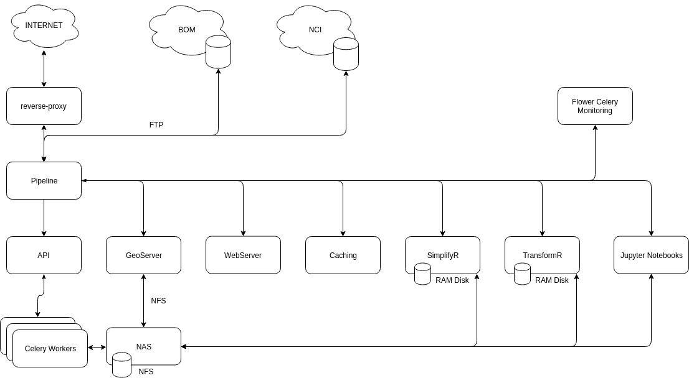

The LFMC Project
The LFMC Project was developed in collaboration with the University of Melbourne, DELWP, and the BNHCRC.
Objectives
The objective of this project is to synthesise existing LFMC research into a single operational system for forecasting landscape fuel moisture condition. Outputs of this project, and their integration into state-agencies’ bushfire prediction and fuel monitoring systems, will greatly improve Victoria’s (and Australia more broadly) ability to prevent, prepare and respond to bushfires.
Fuel Moisture Models each utilise specific metrics, spatial and temporal scales, and as such, apply to the environment in different ways. This project attempted to bring these varying models into a single unified platform to provide a means of comparing and contrasting each product across the Victorian (and sometimes Australian) landscape.
System Overview
The LFMC system is built on a MicroService Architecture for modularity, scalability, security, and flexibility.

The system draws upon raw data products published by the Bureau of Meterology and the National Computing Infrastructure GeoNetwork, and dynamically generates, stores and publishes a selection of Fuel Moisture Models based on the latest Scientific Research.
Outcomes
The project provides a system with a range of metrics to predict landscape fuel moisture. Expertise within the project team and the workshop participants has ensured that these models represent the best available science in Australia and potentially internationally. Furthermore, the tools developed for downloading the data allow for these inputs to be incorporated into bushfire risk modelling in an operational and strategic sense.
Tools were created to allow the fine grained analysis of each model using spatial and temporal search parameters using common formats such as GeoJSON and ESRI Shapefiles.
The availability of data is determined by the release cycles of the authors including the publishing times of the upstream providers.
The system has been developed to be 'self-healing' and highly performant. However while it will pro-actively seek missing source datasets, communication errors, permissions, or licensing, could possibly prevent timely delivery of results.